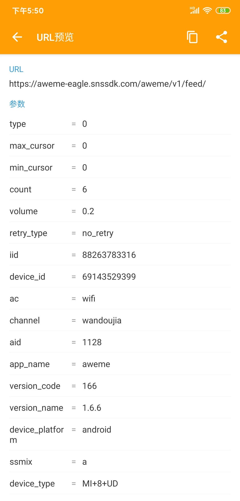
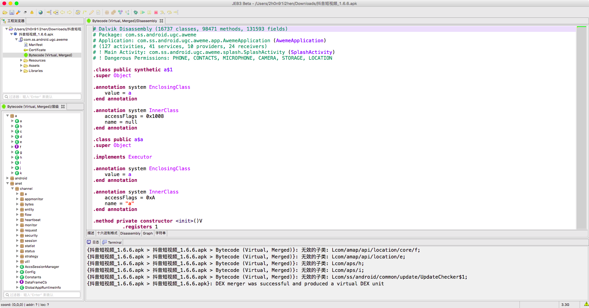
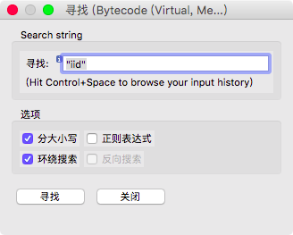
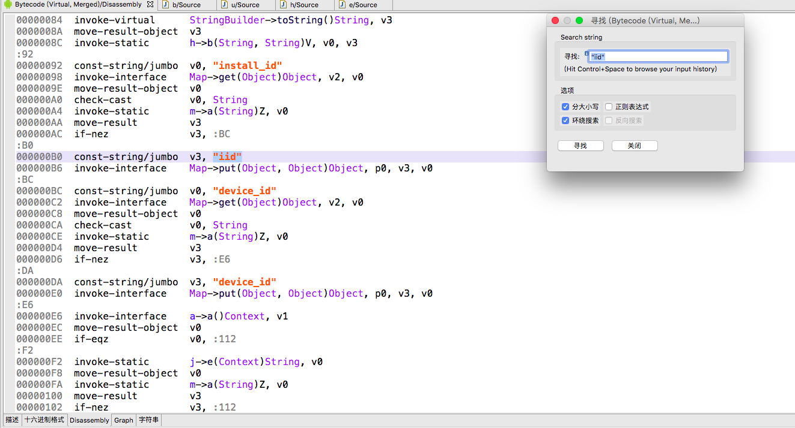
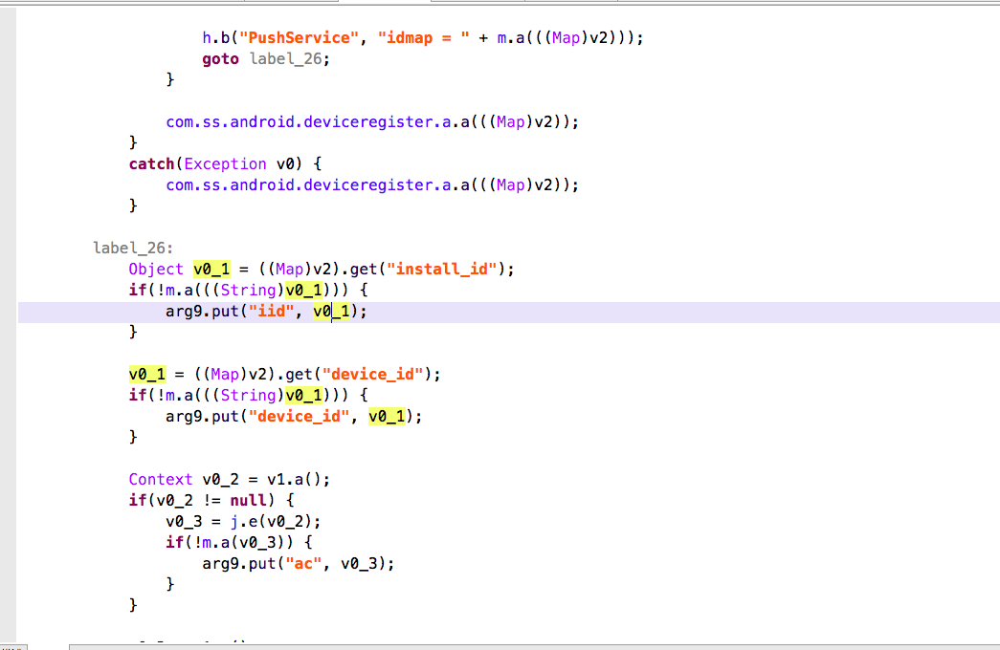
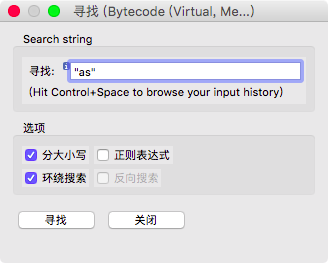
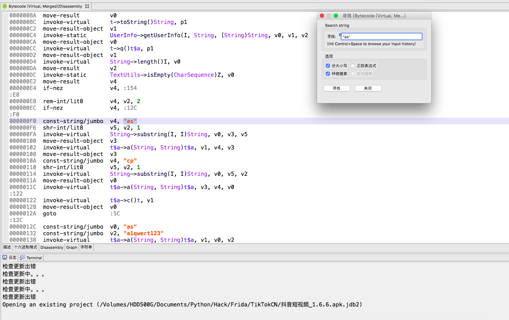
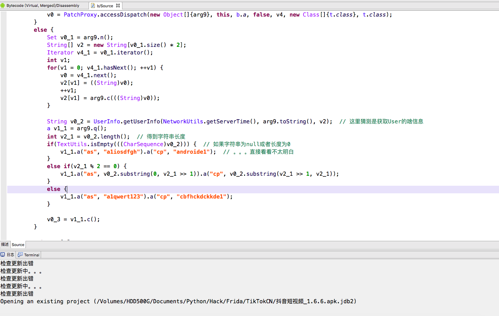
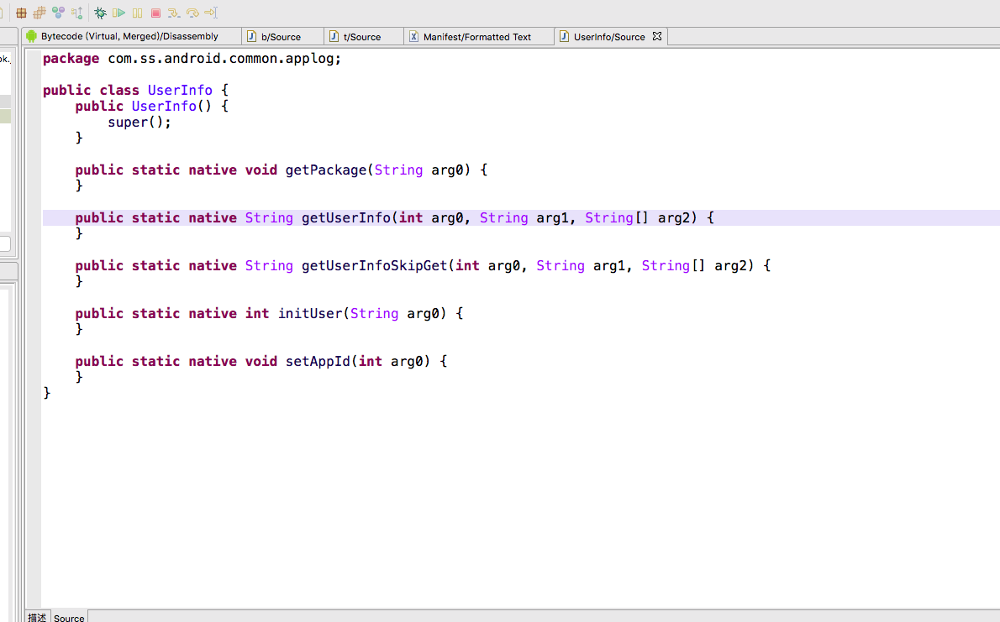
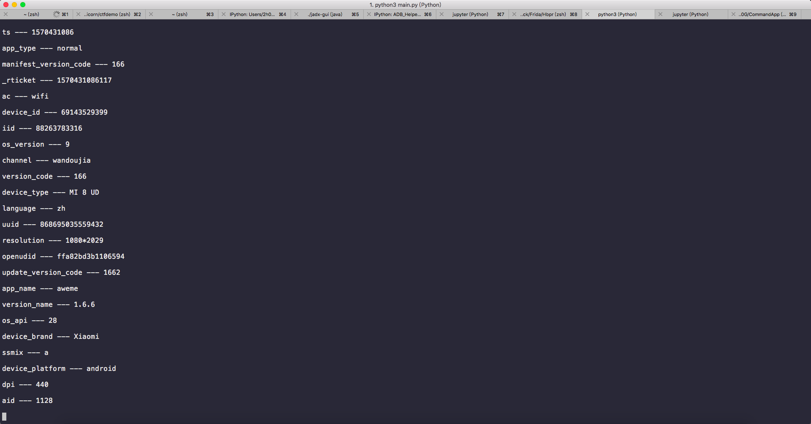

{kind=link}
抖音分析 - 篇一

前言
这篇文章没什么技术性，非常简单。
android 抖音最新版本v8.1.1抓包请求的api是v2版本，返回的json被稍微加密了，虽然能看出一些内容，但是中文几乎全部被加密，本来想研究apk的，奈何我当年没好好学，很菜，所以我就想到其他版本，就好像写爬虫pc复杂转移动端那样转其他版本，我找到一个v1版的api且能正常使用的版本1.6.6，该api返回的json内容很干净
所需工具:
jadx、jeb
一、分析
1.1 参数分析
抓个包，别找错了请求url。。。我之前就找错了，有一条请求包很大，其实是你附近的视频列表

这里的url和请求
url：https://aweme-eagle.snssdk.com/aweme/v1/feed/
params：1
2
3
4
5
6
7
8
9
10
11
12
13
14
15
16
17
18
19
20
21
22
23
24
25
26
27
28
29
30
31
32
33{
'type': '0', # 不知道啥玩意儿
'max_cursor': '0', # 不知道啥玩意儿
'min_cursor': '0', # 不知道啥玩意儿
'count': '6', # 个数
'volume': '0.2', # 不知道啥玩意儿
'retry_type': 'no_retry', # 不知道啥玩意儿
'iid': '88263783316', # install id，固定即可
'device_id': '69143529399', # 设备id，固定即可
'ac': 'wifi', # 网络类型
'channel': 'wandoujia', # 安装渠道吧
'aid': '1128', # 不知道啥玩意儿
'app_name': 'aweme', # appname
'version_code': '166', # 版本号
'version_name': '1.6.6', # 版本
'device_platform': 'android', # 设备平台
'ssmix': 'a', # 不知道啥玩意儿
'device_type': 'MI+8+UD', # 设备类型
'device_brand': 'Xiaomi', # 设备品牌
'language': 'zh', # 系统语言
'os_api': '28', # android 版本号
'os_version': '9', # android 版本
'uuid': '868695035559432', # 多半和登陆账号有关
'openudid': 'ffa82bd3b1106594', # 不知道啥玩意儿
'manifest_version_code': '166', # androidmanifest中的版本号
'resolution': '1080*2029', # 分辨率
'dpi': '440', # dpi
'update_version_code': '1662', # 更新版本号
'_rticket': '1570419542810', # 时间戳
'ts': '1570419542', # 时间戳
'as': 'a185bba996d57d23ba', # 不知道啥玩意儿
'cp': 'b357d1586da49f39e1' # 不知道啥玩意儿
}
ok，简要分析了下各个参数大概是干嘛的，等我多抓几次包，看看哪些是不变的，或者哪些可以去除，骚等一会
…
第二次抓包与第一次对比变化的参数如下：
_rticket、ts、as、cp
as、iid、_rticket、ts 是刚需，cp 可有可无，以及其他基本不变的参数也是基本都需要的，否则会返回类似这玩意儿的结果1
2
3
4
5{'status_code': 2154,
'aweme_list': [],
'has_more': 1,
'min_cursor': 0,
'max_cursor': 0}
所以，我们现在需要找到 as、cp 这俩参数加密的地方
1.2 JEB分析
打开jeb3.0，拽入apk1
正在处理artifact...
dnmd，等一万年
加载完

先搜索iid，我在上面说了这个不变即可，但我还是要让各位搞明白这个是啥

一会就找到了

在Mac上jeb3.0反编译是按tab，

可以看到iid其实是叫 install_id，所以我猜测这个保持不变即可
接着搜索“as”，记得把分大小写和环绕搜索勾上

在多次搜索->反编译分析->搜索之后，找到一个可疑的类

反编译

我觉得这个对新手不太友好，所以我决定换jadx反编译，然后贴出关键部分代码：1
2
3
4
5
6
7
8
9
10
11
12
13// 首先是通过UserInfo类的getUserInfo方法获取用户的信息...吧
String userInfo = UserInfo.getUserInfo(NetworkUtils.getServerTime(), tVar.toString(), strArr);
// 这个我反编译看了下，代码有点长，懒得分析，不用管它了
t.a q = tVar.q();
// 获取字符串长度
int length = userInfo.length();
if (TextUtils.isEmpty(userInfo)) { // 如果userInfo为null或者长度为0
q.a(AdvanceSetting.ADVANCE_SETTING, "a1iosdfgh").a("cp", "androide1");
} else if (length % 2 == 0) { // 判断userInfo长度是不是2的倍数
q.a(AdvanceSetting.ADVANCE_SETTING, userInfo.substring(0, length >> 1)).a("cp", userInfo.substring(length >> 1, length));
} else {
q.a(AdvanceSetting.ADVANCE_SETTING, "a1qwert123").a("cp", "cbfhckdckkde1");
}
管它呢，先hook到getUserInfo返回的东西再说…emmm，当我点进UserInfo类后陷入了沉思

OK，关于native下一篇再讲，先看看还有没有其他办法，毕竟刚刚的判断让我觉得还有希望；还是先hook到userinfo再说，既然本篇没法hook getUserInfo方法，那我们就直接hook当前方法。
getUserInfo
第一个参数很明显是个时间，int类型
第二参数是我们这个方法的参数调用toString方法后，String类型
第三个参数也可以通过这个方法的参数算出来，String[]类型
开始动手1
2
3
4
5
6
7
8
9
10
11
12Java.perform(function() {
var cls_b = Java.use('com.ss.android.ugc.aweme.f.a.b');
// var cls_NetworkUtils = Java.use('com.ss.android.common.util.NetworkUtils');
cls_b.a.implementation = function(t) {
console.log('[hook] cls_b.a function...')
var set_n = t.n().toArray();
// console.log('[cls_b.a] server time:', cls_NetworkUtils.getServerTime())
set_n.forEach(function(a) {
console.log(a, '---', t.c(a), '\n')
});
}
})
输出如图

应该很眼熟，就是请求的参数，然后那个getServerTime()返回的是时间戳，接着模拟调用一下getUserInfo。我已经成功获取到userInfo，所以我直接贴上所有代码1
2
3
4
5
6
7
8
9
10
11
12
13
14
15
16
17
18
19
20
21
22
23
24
25
26
27Java.perform(function() {
console.log('---')
// 首先拿到一些要用到的class的对象
var cls_b = Java.use('com.ss.android.ugc.aweme.f.a.b');
var cls_UserInfo = Java.use('com.ss.android.common.applog.UserInfo');
var cls_NetworkUtils = Java.use('com.ss.android.common.util.NetworkUtils');
console.log('===')
console.log(cls_b);
// 接着hook b.a 方法
cls_b.a.implementation = function(t) {
console.log('[hook] cls_b.a function...')
var set_n = t.n().toArray(); // 这里是将t.n()返回的set类型数据转为array
console.log('[cls_b.a] set_n:', set_n);
console.log('[cls_b.a] server time:', cls_NetworkUtils.getServerTime())
var param3 = [] // 这个是参数3
set_n.forEach(function(a) {
param3.push(a); // 添加请求参数中的key
param3.push(t.c(a)); // 添加请求参数中的values（t.c方法是获取value的)
});
param3 = Java.array("java.lang.String", param3); // 将param3转为Java中的String[]类型
console.log('[cls_b.a] param3:', param3);
// 调用getUserInfo
var userInfo = cls_UserInfo.getUserInfo(Math.round(Date.now()*0.001), t.toString(), param3);
console.log('[cls_b.a] UserInfo:', userInfo);
}
})
运行结果1
2
3
4
5
6
7
8
9[*] Running CTF
---
===
<com.ss.android.ugc.aweme.f.a.b>
[hook] cls_b.a function...
[cls_b.a] set_n: aweme_id,cursor,count,comment_style,ts,app_type,manifest_version_code,_rticket,ac,device_id,iid,os_version,channel,version_code,device_type,language,uuid,resolution,openudid,update_version_code,app_name,version_name,os_api,device_brand,ssmix,device_platform,dpi,aid
[cls_b.a] server time: 1570438077
[cls_b.a] param2: aweme_id,6744653984100846859,cursor,0,count,20,comment_style,2,ts,1570438077,app_type,normal,manifest_version_code,166,_rticket,1570438077547,ac,wifi,device_id,69143529399,iid,88263783316,os_version,9,channel,wandoujia,version_code,166,device_type,MI 8 UD,language,zh,uuid,868695035559432,resolution,1080*2029,openudid,ffa82bd3b1106594,update_version_code,1662,app_name,aweme,version_name,1.6.6,os_api,28,device_brand,Xiaomi,ssmix,a,device_platform,android,dpi,440,aid,1128
[cls_b.a] UserInfo: a1157fa97e3b6dbb9af3b7d952e7ab93b7e1 # 这就是输出的UserInfo
接着就是上面java代码的后半段1
2
3
4
5
6
7
8
9
10
11
12
13
14
15
16
17
18// 首先是字符串userInfo
String userInfo = 'a1157fa97e3b6dbb9af3b7d952e7ab93b7e1';
// 获取下userInfo的长度
int uiLen = userInfo.length();
// 判断方面我就直接省略了
...
// 通过t.q()获取a对象
a q = t.q();
/** q.a(AdvanceSetting.ADVANCE_SETTING, userInfo.substring(0, length >> 1)).a("cp", userInfo.substring(length >> 1, length));
* q先把它当作一个Map
* a就是put方法
* ADVANCE_SETTING其实就是字符串"as"，它是key
* userInfo.substring(0, length>>1) 这是获取userInfo的前半部分，因为length>>1就是除以2
* userInfo.substring(length >> 1, length) 这就是获取后半部分
**/
q.a("as", userInfo.substring(0, uiLen/2))
.a("cp", userInfo.substring(uiLen/2, uiLen);
return q.c();
然后我改了改hook代码……1
2
3
4
5
6
7
8
9
10
11
12
13
14
15
16
17
18
19
20
21
22
23
24
25
26Java.perform(function() {
var cls_b = Java.use('com.ss.android.ugc.aweme.f.a.b');
var cls_UserInfo = Java.use('com.ss.android.common.applog.UserInfo');
var cls_NetworkUtils = Java.use('com.ss.android.common.util.NetworkUtils');
cls_b.a.implementation = function(t) {
console.log('[hook] cls_b.a function...');
var set_n = t.n().toArray();
console.log('[cls_b.a] set_n:', set_n);
console.log('[cls_b.a] server time:', cls_NetworkUtils.getServerTime());
var param2 = [];
set_n.forEach(function(a) {
param2.push(a);
param2.push(t.c(a));
});
param2 = Java.array("java.lang.String", param2);
console.log('[cls_b.a] param2:', param2);
var userInfo = cls_UserInfo.getUserInfo(Math.round(Date.now()*0.001), t.toString(), param2);
console.log('[cls_b.a] UserInfo:', userInfo);
var as = userInfo.substring(0, userInfo.length/2);
var cp = userInfo.substring(userInfo.length/2, 0);
console.log('[cls_b.a] as:', as);
console.log('[cls_b.a] cp:', cp);
return this.a(t);
}
})
output1
2
3[cls_b.a] UserInfo: a19560291bd66dd68b0061d85db4b69963e1
[cls_b.a] as: a19560291bd66dd68b
[cls_b.a] cp: a19560291bd66dd68b
这样就能通过frida获取参数as、cp，但是就这种程度是不能用python写生成这俩参数的方法，所以我会在下一篇文章写出so的分析
END
Code：https://github.com/ZCKun/douyin
WeChat Official Account：the2h0Ng